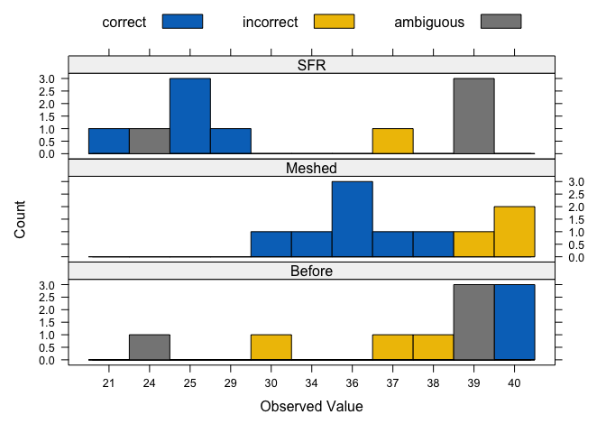

An R package for classification using binary procrustes rotation based on Grice (2011).
Installation
clubpro can be installed from CRAN:
install.packages("clubpro")Install the development version of clubpro from GitHub with:
# install.packages("remotes")
remotes::install_github("timbeechey/clubpro")Background
clubpro is an implementation of a subset of the methods described in Grice (2011).
using clubpro
For this example we’ll use the Friendly dataset from the carData package.
data(Friendly, package = "carData")
dat <- FriendlyThis data set consists of counts of correctly recalled words (out of 40) across three experimental conditions.
str(dat)
#> 'data.frame': 30 obs. of 2 variables:
#> $ condition: Factor w/ 3 levels "Before","Meshed",..: 3 3 3 3 3 3 3 3 3 3 ...
#> $ correct : int 39 25 37 25 29 39 21 39 24 25 ...Run the model to quantify how well each count of correct recalled words is classified in terms of condition.
mod <- club(correct ~ condition, data = dat, nreps = 1000)Print a summary of the model output.
summary(mod)
#> ********** Classification Results **********
#> Observations: 30
#> Missing observations: 0
#> Target groups: 3
#> Correctly classified observations: 15
#> Incorrectly classified observations: 7
#> Ambiguously classified observations: 8
#> PCC: 50
#> Median classification strength index: 0.74
#>
#> ********** Randomisation Test **********
#> Random reorderings: 1000
#> Minimum random PCC: 20
#> Maximum random PCC: 80
#> Chance-value: 0.92
#>
#> individual observation target prediction accuracy csi
#> 1 1 39 SFR Before|SFR ambiguous 0.68
#> 2 2 25 SFR SFR correct 1.00
#> 3 3 37 SFR Meshed incorrect 0.62
#> 4 4 25 SFR SFR correct 1.00
#> 5 5 29 SFR SFR correct 1.00
#> 6 6 39 SFR Before|SFR ambiguous 0.68
#> 7 7 21 SFR SFR correct 1.00
#> 8 8 39 SFR Before|SFR ambiguous 0.68
#> 9 9 24 SFR Before|SFR ambiguous 0.71
#> 10 10 25 SFR SFR correct 1.00
#> 11 11 40 Before Before correct 0.80
#> 12 12 38 Before Meshed incorrect 0.74
#> 13 13 39 Before Before|SFR ambiguous 0.68
#> 14 14 37 Before Meshed incorrect 0.62
#> 15 15 39 Before Before|SFR ambiguous 0.68
#> 16 16 24 Before Before|SFR ambiguous 0.71
#> 17 17 30 Before Meshed incorrect 0.74
#> 18 18 39 Before Before|SFR ambiguous 0.68
#> 19 19 40 Before Before correct 0.80
#> 20 20 40 Before Before correct 0.80
#> 21 21 40 Meshed Before incorrect 0.80
#> 22 22 39 Meshed Before|SFR incorrect 0.68
#> 23 23 34 Meshed Meshed correct 1.00
#> 24 24 37 Meshed Meshed correct 0.62
#> 25 25 40 Meshed Before incorrect 0.80
#> 26 26 36 Meshed Meshed correct 1.00
#> 27 27 36 Meshed Meshed correct 1.00
#> 28 28 38 Meshed Meshed correct 0.74
#> 29 29 36 Meshed Meshed correct 1.00
#> 30 30 30 Meshed Meshed correct 0.74Plot the classification results.
plot(mod)